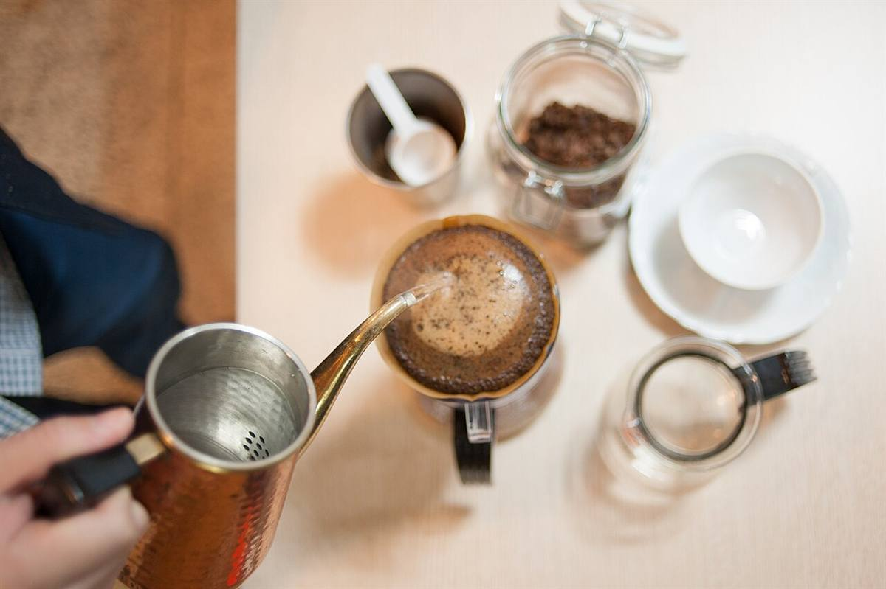
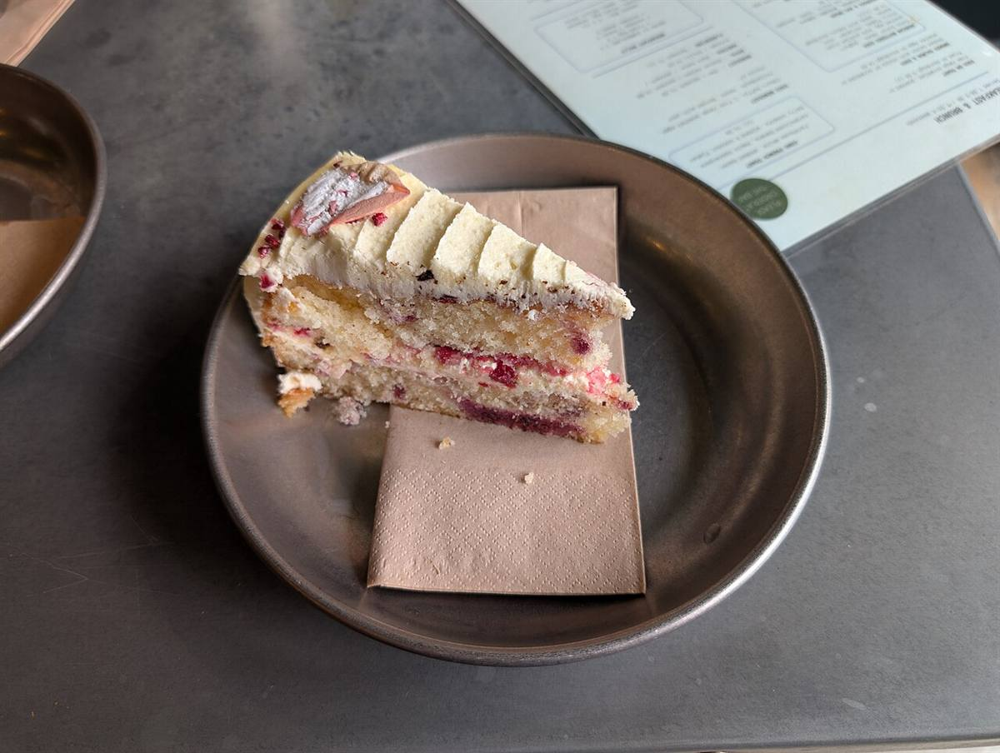
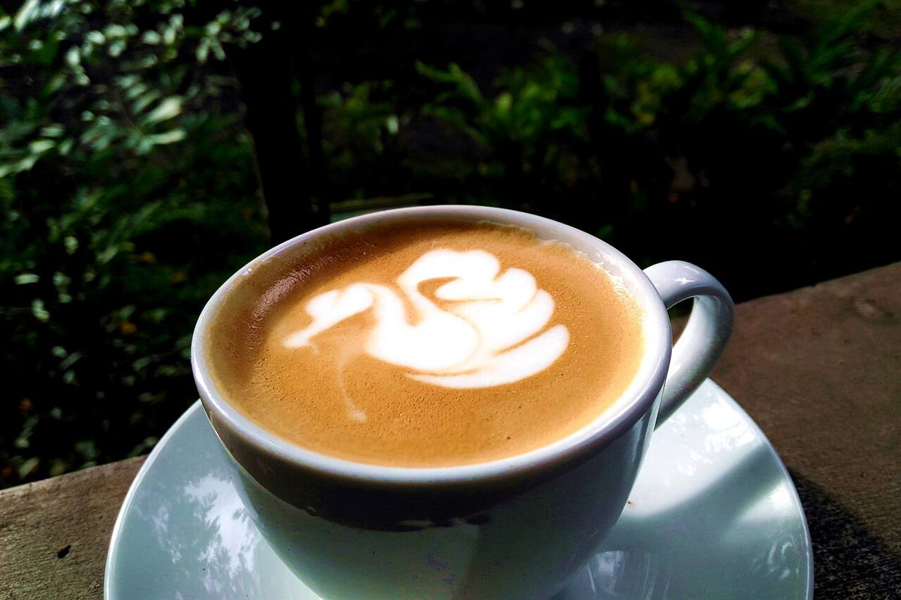

メニュー
メニューの内容・区分・価格は準備中です(お問い合わせください)。
イメージ
下の写真は雰囲気をお伝えするためのイメージで、実際のメニューではありません。



試作サンプル(実店舗の公式サイトではありません)
写真はフリー素材のイメージです。実際のお店とは異なります
メニューの内容・区分・価格は準備中です(お問い合わせください)。
下の写真は雰囲気をお伝えするためのイメージで、実際のメニューではありません。


